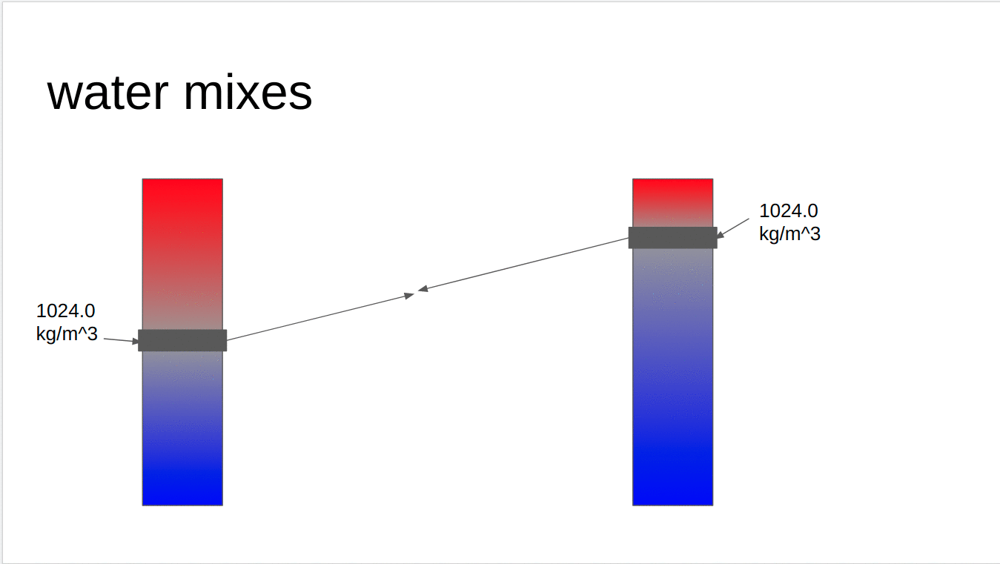
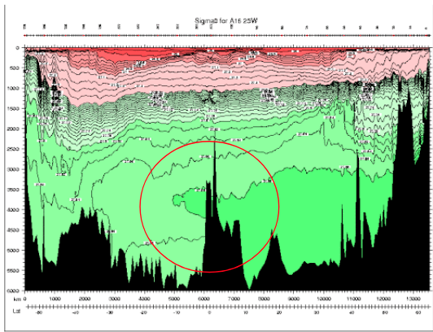
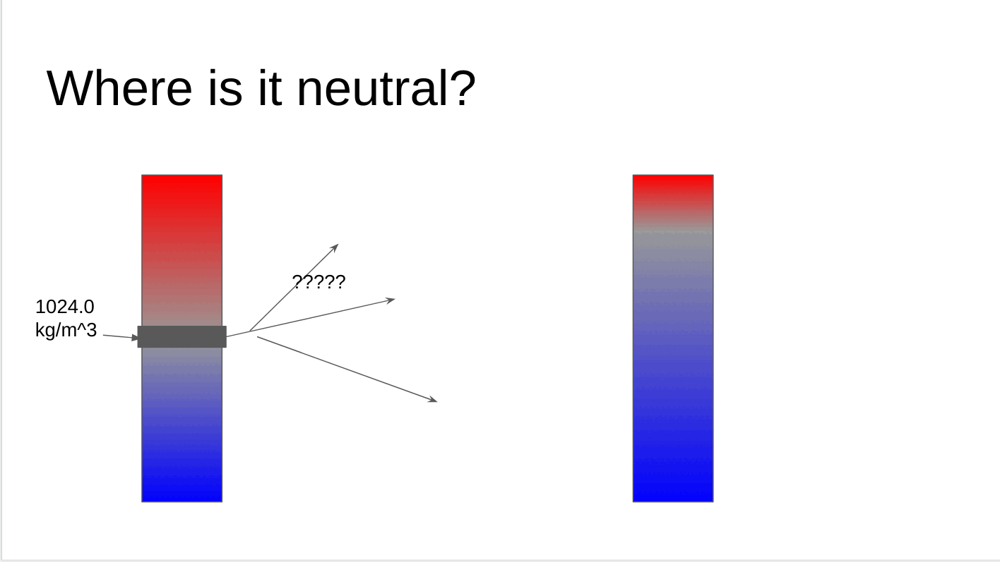
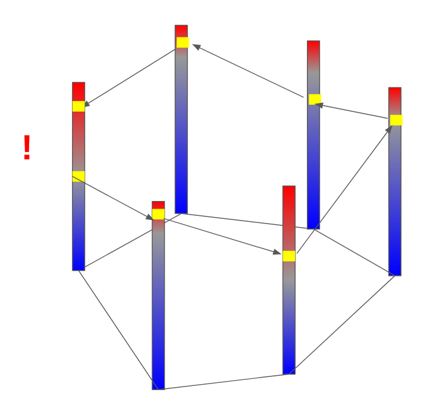
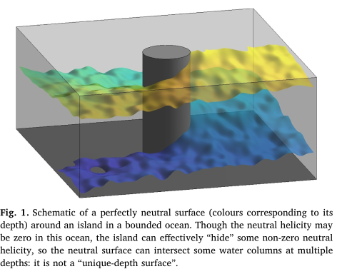
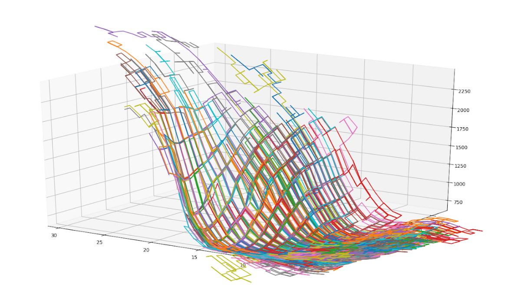
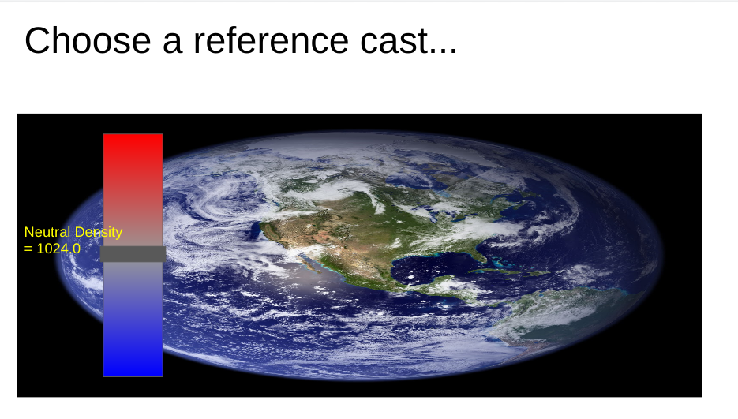
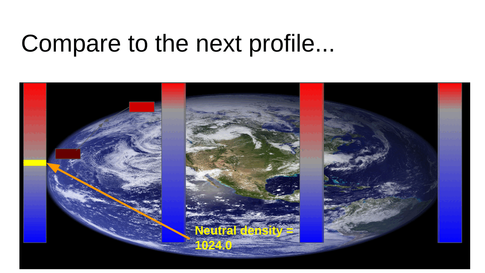
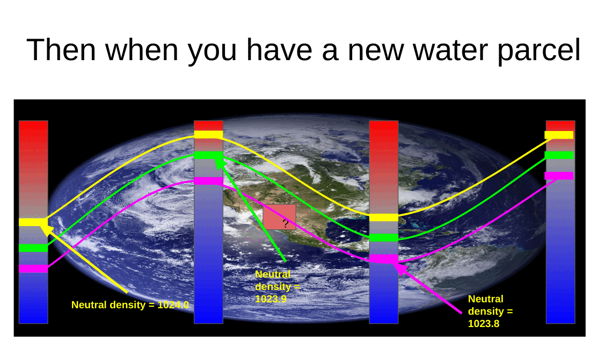

Neutral Variables !
Table of Contents
1 Who is this for?
There are a number of densities floating around in the oceanographic world and it can be hard to understand the difference between them. This article aims to be a straightforward primer on oceanographic density for those with some background in physical oceanography. It is not meant to be overly rigorous as there is a lot of literature on the subject.
2 In-situ density
The in-situ density of seawater is the mass per unit volume of seawater as a function of its salinity, temperature, and pressure (depth). In-situ density is experimentally determined in a lab, and software toolboxes like TEOS-10 (The Equation Of State 10) offer extremely accurate functional forms of in-situ density which anyone can use. Case closed then right? Wrong! While in-situ density gives us the mass per unit volume of any water parcel in the world ocean, oceanographers want more than density out of their density variable. To understand why, we're going to take a step back and look at the broader picture.
3 (My view of) A physical oceanographer's view of the ocean.
The ocean is on average 4 kilometers deep and has basins which are thousands of kilometers wide. The ocean is a thin film that lies on the crust of the earth. This may lead you to believe that the ocean is constantly mixing vertically from top to bottom, but the opposite is true. Beneath the top layer of the ocean, which is mixed by winds and weather, seawater mixes very little vertically. Once water slips beneath the surface it will often maintain the properties that it had when it was last at the surface.
Water resists being mixed vertically because it is stratified by density. Cold salty water which is formed at the poles, sinks to the bottom of the water column and becomes even more dense as it is crushed by 1000s of dbar of water above it. Warm, fresh water formed in the tropics sits on top. Much like a cup that contains oil and water, it is hard to mix waters which are so different. Water of course does mix vertically in the interior of the ocean, but making the assumption that that mixing is minimal is a powerful one. It allows physical oceanographers to break the ocean into layers and decompose its complex three dimensional circulation into a set of two dimensional circulations on those layers. These surfaces over which water travels through but doesn't mix across are called neutral surfacese. In a perfect world surfaces of constant density would be neutral surfaces.
4 Why is in-situ density not neutral?
Let's now return to in-situ density. Consider two adjacent points in the ocean x0 and x1 which have the same in-situ density, but different water properties (s0, t0, p0) and (s1, t1, p1) respectively. These points have the same in-situ density (mass over volume), but does that mean they lie on the same neutral surface? Well if the two points are on the same neutral surface then it should be that they can mix without any work. Let's pretend that both parcels of water mix at their mid point. Without any loss of generality lets assume that the water parcel at x0 is at a lower pressure than the water at x1. This means to meet at their midpoint, the parcel that began at x0 must rise, and the parcel that began at x1 must sink. As the x0 parcel rises it is being crushed by less water above it, it expands, and becomes less dense. As the x1 parcel sinks, it is being crushed by more water making it shrink and become more dense. By the time they meet in the middle, the parcel which began at x0 is significantly less dense than the one at x1. This is illustrated in the gif below. We can consider the difference in the densities of these two water parcels at their midpoint a measure of their neutrality. If these two water parcels lay on the same neutral surface, that difference would be 0.

So what does that little thought experiment tell us really? It tells us that lines of constant in-situ density are not perfectly neutral surfaces, in fact, they are not even close.
5 Potential density
Next up is the measure of density which is ?the most widely? used. Potential density is the density of a water parcel if it were moved to a reference pressure. Potential density approaches the problems with surfaces of constant in-situ density and says, "The real problem with in-situ density is the effect of pressure on density. Let's use the exact same equation of state, but lets treat water parcels like they are at a reference pressure instead of their actual pressure!" As a result surfaces of constant potential density are far more neutral than surfaces of in-situ density near the reference pressure chosen. However, this does not actually solve the problems outlined in the previous section, as two parcels of water which lie on the same neutral surface do not rise/descend to some arbirtrary pressure to mix they meet somewhere in between. In addition, the pressure of water parcels is important, and ignoring it can have some weird effects! Below is a section in the Atlantic ocean of Potential Density with a reference pressure of 0 dbar (\(\sigma_0\)). Circled in red is a region where water of higher potential density lies above water of lower potential density. This would imply the water there was actively overturning, however if we were to look at the same chart but with In-situ density contoured, the water's density would be strictly increasing with depth.

6 The Neutral Tangent Plane and Helicity
Ok. We've seen how surfaces of constant in-situ density and potential density aren't very neutral, but how do we construct a better one? The answer may appear simple; construct a surface that is perfectly neutral. The thing stopping us is called helicity. But first, a definition:
6.1 The Neutral Tangent Plane
Quickly and informally, we can define the neutral tangent plane as the path between two water columns upon which a water parcel would undergo no restoring force. In the discrete case, if we would like to find the neutral tangent plane which passes through (S0 ,T0 ,p0 ) and an adjacent water column with salinity, temperature and pressure (Si ,Ti ,pi ) , we want to find where \(\rho(S_0,T_0,\frac{p_i+p_0}{2})=\rho(S_i,T_i,\frac{p_i+p_0}{2})\). To introduce just one more piece of jargon, we will call finding this solution "solving the dieneutral relation."

To clear up this notation which may be confusing. S0 , T0 , and p0 are constants which represent the salinity temperature and pressure of our water parcel. Si , Ti , pi represent the ith element of some sets S , T and p which contain the salinity temperature and pressure data about an adjacent water column in the ocean. When we are solving the dieneutral relation, \(\rho(S_0,T_0,\frac{p_i+p_0}{2})=\rho(S_i,T_i,\frac{p_i+p_0}{2})\) , we are trying to find the ith element of S, T and p which satisfies that equation. So we are taking one water parcel and scanning up and down the adjacent water column for where that condition is met.
6.2 Helicity
In a just world, if we followed the neutral tangent plane throughout the ocean we would be traveling along a perfectly neutral surface which we could label a certain density and go home. But the ocean is a cruel mistress. If you follow the neutral tangent plane through the ocean, hopping from one profile to the next in a big circle, when you return to where you started you will be at a different pressure. If you repeatedly go around in a circle, you will form a big corkscrew or helix and that is helicity. This means perfectly neutral surfaces are not well-defined and that at any given point in space there are multiple (maybe infinite) solutions for their depth. This isn't due to a lack of resolution in our sampling of the ocean, it's just due to the complex nature of the equation of state. An explanation of the math is out of the scope of this paper (check out (McDougall and Jackett 1988) ), but I think intuitively it makes some sense. The equation of state is a four dimensional function (three inputs and two outputs) so it makes some sense that some wonky stuff could happen. Furthermore, water doesn't travel along perfect surfaces throughout the ocean. As it travels it undergoes changes as it is mixed and modified. Our initial assumption that we could split the ocean into perfect layers, was just that, an assumption so we can't really expect it to hold up perfectly.
6.3 My clip art rendition of helicity

6.4 A way prettier version from Stanley 2019 (2)

6.5 This graph shows some random walks following the neutral tangent plane through the OCCA climatology.

7 Neutral Density
Helicity. Blech. But we are working oceanographers and helicity will not defeat us! We still want a density variables whose surfaces of constant density are well defined and as neutral as possible so we just have to make some tradeoffs! Enter Neutral Density! Neutral density was made in 1993 by Jacket and Macdougall (3) and here's a summarized (and simplified) recipe to create it.
- Pick a reference global climatology. In their 1997 paper, Jackett and McDougall use the Leviticus climatology, but really we could use any climatology which provides us full-depth profiles of temperature and salinity throughout the world ocean.
Choose a starting point. Once we have a global climatoloy we can select a single profile we will be using as a reference and mark what our new density variable is at each pressure. One fun thing to note here is that the labelling doesn't really matter that much as long as it is increasing (I think?).

- Spread throughout the ocean! Now comes the hard work. Beginning with the reference profile we chose, for each labelled depth we solve the dieneutral relation between that point on the reference profile, and each adjacent profile in the climatology. We can then repeat this process for each profile we just labelled and the profiles surrounding it, spreading out over the ocean. If we repeat this process throughout our entire climatology we will assemble a global set of approximate neutral surfaces that all pass through our reference profile. Then for every water parcel x0 in our climatology we can assign it the density value of the water parcel it is approximately neutral to from our reference profile.

- Profit. So now we have created a global climatology of neutral density, but that doesn't yet help someone to wants to know the neutral density for their latest experiment. If someone comes to us with information about the temperature, salinity, pressure, latitude and longitude of some piece of water in the ocean we know that that piece of water is surrounded by profiles in our global climatology. We can then solve the discrete neutral relation for what pressure on those surrounding climatology profiles is neutral to the given water parcel. Each of the pressures on our surrounding climatology profiles is associated with a labelled neutral density, and we can then take an average of those densities, weighted by the distance of the input water parcel from each of the surrounding climatology profiles, to find the neutral density of the supplied water parcel.

8 Conclusion
Thanks for reading! I hope you got something out of this write up. The coolest part about density and neutral densities to me is the underlying tension between the oceanographers' desire for a measure of density which splits the ocean into well-defined surfaces upon which water travels throughout the ocean, and the reality that those don't really exist. Throw in the fact that the more complex density variables are often more computationally expensive than the simpler less neutral ones, and it becomes clear that an oceanographer has to make a careful choice about what density variable is best for each problem they are working on.
9 Other Density Variables
Here are some one sentence descriptions of other density variables for fun.
9.1 Omega surfaces
Treat surfaces as an optimization problem and minimize error everywhere.
9.2 Topobaric Density
Pretend helicity does not exist and do fancy topology to find better density variable.
9.3 In-situ density anomaly surfaces
Consider difference from a reference salinity and temperature. Very cool and fun two thumbs up.
10 Bibliography
- McDougall, T. J., and D. R. Jackett. 1988. On the helical nature of neutral trajectories in the ocean. Progress in Oceanography 20: 153–183. doi:10.1016/0079-6611(88)90001-8
- Stanley, G. J. 2019. Neutral surface topology. Ocean Modelling 138: 88–106. doi:10.1016/j.ocemod.2019.01.008
- Jackett, D. R., and T. J. Mcdougall. 1997. A Neutral Density Variable for the World’s Oceans. JOURNAL OF PHYSICAL OCEANOGRAPHY 27: 27.